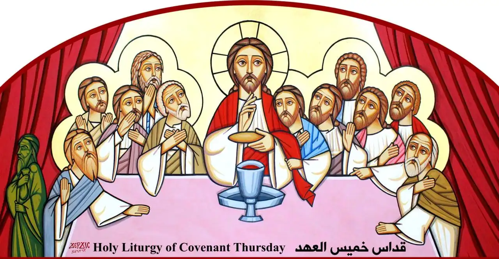
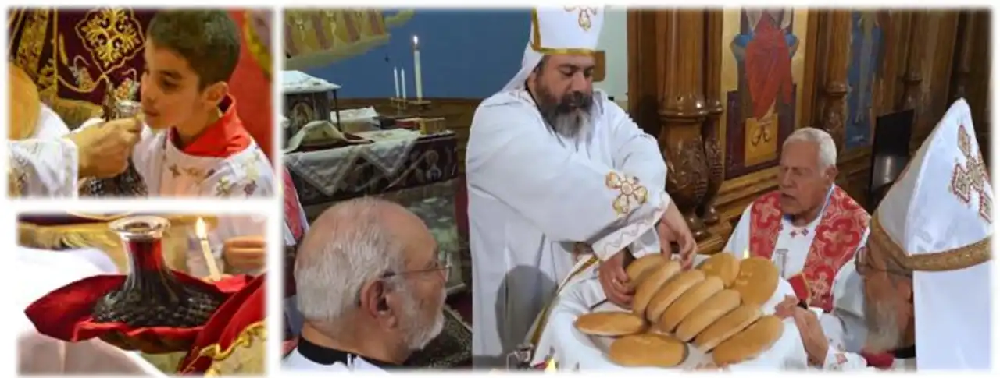
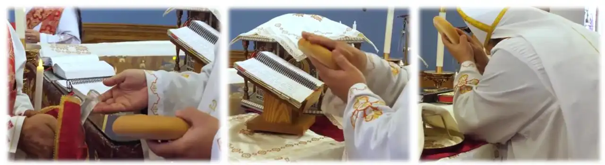

| قداس خميس العهد |
|
 يُقَدَّم الْحَمَلُ فِي صَمْتِ، وَلاَ يُقَال كيريه ليسون. أبونا بيغسل ايديه 3 مرات وبيخرج، والحمل بيكون في الطبق على شكل صليب وبيكون عدد فردي والشماس بيكون واقف معاه قارورة الاباركة بيده اليمين وشمعة بالشمال ( فوق بعض ) والثاني معاه دورق المياه. القربانة اللي بيختارها أبونا بيلمس بيها باقي القربان وده إشاره إلى ان ذبائح العهد القديم اشارت إلى ذبيحه المسيح وتلامست معها.  أبونا بيعمد القربانة كلها بالماء إشارة لمعمودية المسيح في نهر الأردن. وكمان بيصلي من أجل شعبه ونفسه إشارة لنقل الهموم والمشاكل والخطايا إلى المسيح. وياريت كل اللي عنده طلبه يطلبها السماء بتكون مفتوحة في اللحظة ديه. |